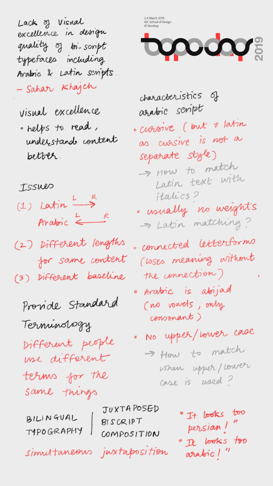
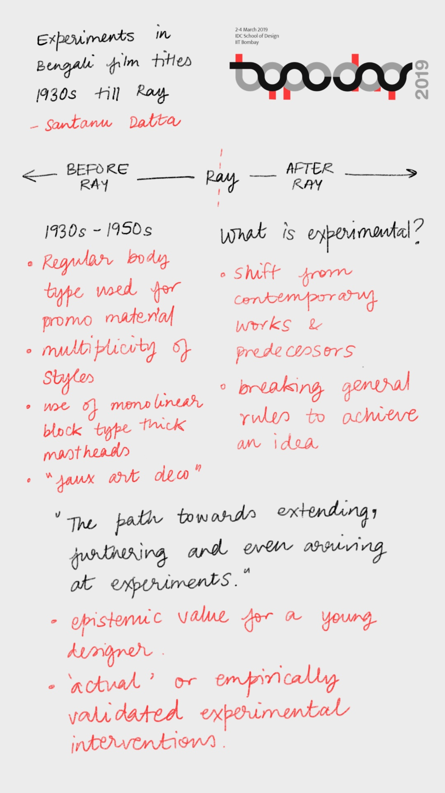
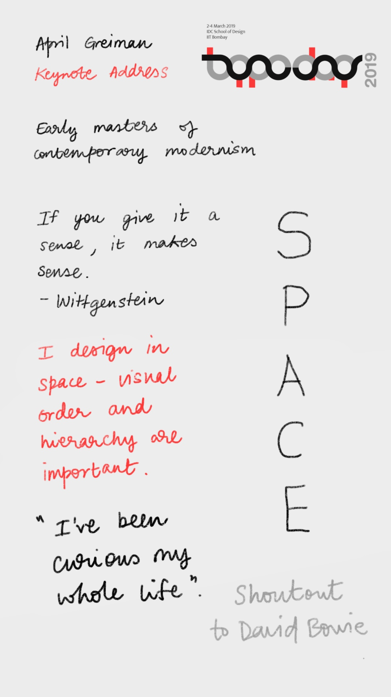

Notes from Typoday 2019
Typoday 2019 was held at IDC School of Design at IIT Bombay from 2-4 March 2019. I took notes on some of the talks given at the event and since a lot of people asked me to give them a copy, I’m sharing them here. I wrote what I could fit on a single page, please look up the original works by the authors for more details!
Keynote Address 1: Prof. R. K. Joshi Memorial Lecture
Aurobind Patel, Typographer, Mumbai
Q & A Session
Aurobind Patel + Prof. G V Sreekumar, IDC, IIT Bombay, India
Mishti Devanagari
Sayli Gokhale, Leaf Design, India

Lack of visual excellence in design quality of bi-script typefaces including Arabic and Latin
scripts
Sahar Khajeh, University of Hertfordshire, UK
Type Explorations
Chirag Gander, Founder, The Minimalist, Mumbai
Dis/re-appearance of vernacular Chinese letterform of Beiwei Kaishu in Hong Kong
Brian Sze Hang KWOK, School of Design, The Hong Kong Polytechnic University, Hong Kong
Visual Variety of Typographic Compositions in Letterpress Sinhala Display Typefaces
Dr.Sumanthri Samarawickrama, Department of Integrated Design, University of Moratuwa, Sri Lanka
Keynote Address 2
Eiichi Kono, Typographer, Senior research fellow at University of Brighton, UK
Exploring historical letterforms to design unique Assamese typeface for digital devices:
Experimenting possibilities
Abhijit Padun and Prof. Amarendra Kumar Das, Dept. of Multimedia Communication and
Design, Central Institute of Technology, Kokrajhar, Assam, India

Experiments in Bengali Film Titles: 1930s till Ray
Santanu Dutta, Homi Bhabha Centre for Science Education, India
Experiential Learning Spaces to Enhance Typographic Communication
Ruchita Arvind Mandhre, University of Illinois at Urbana Champaign, USA

If Words Could Kill
Jayesh Narendra Patil, United Institute of Design, India
Keynote Address 3
Prof. Antoine Abi Aad, Typographer, Faculty at the Lebanese University (Lebanon)
Innovative applications of Experimental Typography (Case Studies)
Rikke Hansen, University of Southern Denmark, Design School Hoejer,
Denmark
The dichotomic tension of experimental typography
Beth Salter, University of Brighton, UK

Keynote Address 4
April Greiman, Typographer, Professor of USC Roski Graduate School of Art and
Design, USA
Closing Keynote Address 5
Mohammed Khan, Founding Member Rediffusion (1973), Contract (1978) and
Enterprise (1983)